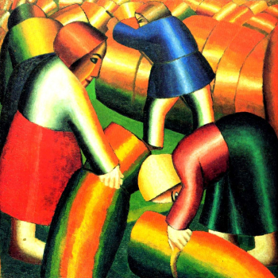
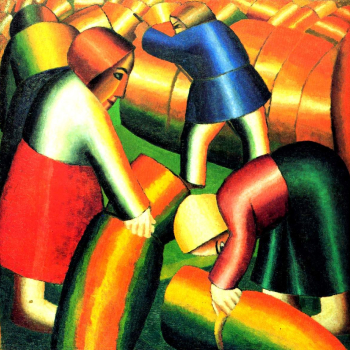

Доменико Гирландайо
Один из ведущих флорентийских художников Кватроченто, основатель художественной династии, которую продолжили его брат Давид и сын Ридольфо. Глава художественной мастерской, где юный Микеланджело в течение года овладевал профессиональными навыками. Автор фресковых циклов, в которых выпукло, со всевозможными подробностями показана домашняя жизнь библейских персонажей (в их роли выступают знатные граждане Флоренции в костюмах того времени).